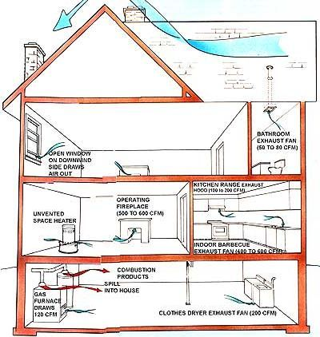

Backdrafting Your Last Gasp
November/December 1988
Recognizing and remedying a largely unrecognized-and potentially deadly-form of indoor air pollution.
SHORT EXTERIOR CHIMNEY ON DOWNWIND SIDE HAS POOR DRAFT

ILLUSTRATION BY DON OSBY
HOW ABOUT COZYING UP TO THE fire for a few minutes for a bedtime story? After all, you deserve to put your bunions up after a full day of insulating, weatherstripping, hauling firewood and installing new storm windows. My, but isn't it satisfying to feel ready for winter? And the signs of approaching cold are unmistakable. The sky was so blue and the air so crisp today that you were tempted to look for stars at noon. Now, as the sun nuzzles the ridge line, the inevitable chill is settling in. It'll probably drop into the teens tonight, so the timing for the season's first fire couldn't be better.
Flames roll against the burned-clean back wall of firebrick; shadows play from a light too subtle to be electrical; the dog-settled at the foot of the hearth-sighs. Today's paper is on the end table, but the firelight is a little too dim to read by, and a lamp would spoil the mood. Besides, the fire is entertainment enough-especially for one who wants so little to move even a single muscle.
Eyelids grow heavy, and soon your chin is bouncing off' your chest. On the edge of a snooze, you have a passing thought about taking care of the fire and closing the window you cracked when you lit it. But there's still too much flame to close the damper. And the window? No matter, the new retention head-burner furnace will kick in and make up for the heat lost.
Comforted, you fall asleep-for the last time.
Terminal Cabin Fever
A melodramatic story? Perhaps, but the scene it portrays isn't all that unusual. According to Jim White, an engineer with the Canadian Mortgage and Housing Corporation Research Division, around 220 North Americans die each year in pretty much the way just described. Other scientists, such as Joseph Lstiburek, of Building Energy Corporation, Toronto, suggest that the toll may actually be much higher-that hundreds more carbon monoxide-induced deaths are being incorrectly attributed.
The cause? Backdrafting of combustion appliances located inside houses. The details vary. It's not always a conflict between a fireplace and a furnace. A family of eight expired near Memphis, Tennessee, in late summer last year when their air conditioner and gas water heater got in a tug of war.
To be sure, even the higher estimates of fatalities are not decimating the population as effectively as, say, the automobile or religious wars. At least not yet. What does cause alarm is that the trend is upward-steeply.
Where Are Pollutants Coming From?
If the only indoor source of combustiongenerated pollutants was the outdoors, you wouldn't be reading this article. Unfortunately, most households don't have to go shopping for combustion products, since they are built around their own pollution sources. Carbon-based fuels such as natural gas, fuel oil, coal, wood, kerosene, alcohol, tobacco-practically every substance that burns other than hydrogen-leave behind a mixture of carbon dioxide, carbon monoxide, nitrogen oxides, particles, volatile organic compounds and water when they burn. A short list of common residential refineries includes furnaces; gas water heaters; gas, oil and kerosene space heaters; gas ranges and ovens; woodstoves; and fireplaces.
Among the many noxious products these appliances produce, carbon monoxide (CO) is of the most immediate concern. This deadly gas (see the sidebar for more about its workings) is the main reason that most combustion devices have chimneys. (Unvented gas appliances and kerosene space heaters produce very little CO when they're working right and are operated correctly, although the long-term health effects of even small amounts of the pollutant are uncertain.) Indeed, as long as chimneys and burners work as designed, people 'don't die of carbon monoxide poisoning in their own homes. But chimneys and appliances don't always work right, and people are dying. Many more are sick.
Why Is CO Staying in Houses?
One of the first questions that comes to mind when one learns of the increase in the incidence of carbon monoxide poisoning is: Why now? Houses have had furnaces for more than a century and fireplaces for most of a millennium. What has changed?
As you'll soon learn, there are many factors that can conspire to foul indoor air, but the root of the problem-the basic design rule that has changed-is that modern houses are prone to operate at lower air pressure than older ones. Often, the air pressure indoors is significantly lower than that outdoors, and if the level of depressurization exceeds the strength of chimney draft-at best, a modest force in a natural-draft chimney-the flue will work backwards. The chimney will serve as the air inlet, and the deadly gas will be exhausted into the house-a phenomenon called backdrafting. What sorts of influences can bring depressurization to a crucial point? Here's a partial list:
1. Weatherization: Because of efforts to reduce air leakage, it takes less to depressurize a modern house than a turn-of-the-century residence. Homes built between about 1940 and 1975 in northern climates are about onethird as leaky as the previous housing stock. According to Gory Nelson of the Minneapolis Blower Door Company (which builds equipment for testing house leakage), the average new Minneapolis home can reach a serious level of depressurization under the influence of a fireplace or a large exhaust fan. And a tight, energy-efficient home may be depressurized by a single bathroom exhaust fan.
2. Fireplaces: When a fireplace is burning actively, it draws as much as 600 cubic feet per minute (cfm) of air from a home-easily enough to backdraft other combustion appliances. Even more serious, the fireplace's natural draft drops as the fire burns down. It may win the battle of depressurization early in the burn, backdrafting other appliances, and then begin backdrafting itself later, during the charcoal phase, when the carbon monoxide concentrations are highest.
Fireplaces are one thing that all the experts dealing with backdrafting agree on: If a modern house is to have one (and if it is to be used), a fireplace should have an ample outside air source and should be equipped with tight-fitting doors that are closed as soon as the flames begin to die.
3. Indoor barbecues and kitchen-island exhaust fans: Modern houses have many exhaust fans, some of which are very powerful. Jim White says that the two most potent inhalers of house air are indoor barbecues and kitchen-island exhaust fans. Typically, neither type of device is fitted with an outside air source, so they suck 400 to 600 cfm of air out of the house. No natural-draft burner can overcome this level of depressurization in even an average home. When the exhaust fan is operating, the furnace, gas water heater, woodstove, and the fireplace, too, will work backwards. White cites examples where the suction has bowed picture windows in to the extent that images distort.
Attempts to fit indoor barbecues and island exhaust fans with their own air inlets are impractical unless the retrofit incorporates an intake fan comparable to the exhaust fan. To provide natural make-up air to the average indoor barbecue fan, you'd need a hole about 32 inches in diameter. When 23 Canadian building code and standard committees convened in Ottawa in October to consider regulations to control backdrafting and spillage, indoor barbecues and other large exhaust fans were high up on the list for discussion.
4. Smaller exhaust fans acting in concert:
In order of the volume of air they expel from a building (after indoor barbecues and island fans), clothes dryers (about 200 cfm), furnaces (about 120 cfm), standard range hoods (about 100 cfm), bathroom ex haust fans (50 to 80 cfm), woodstoves (less than 50 cfm) and gas water heaters (about 40 cfm) all can contribute to depressurization.
5. More-efficient and smaller furnaces: Most of the improvements in furnace efficiencies achieved in the last decade have come from more-effective heat extraction. As a result, flue gas temperatures are lower and draft is reduced proportionately. In fact, draft is so threatened by low exhaust temperature that the most-efficient furnaces now have fans to remove the waste products. It's the middle ground where problems can arise. A chimney that was marginal with a 65%-efficient furnace-because it was too large or was leaky or was on a cold outside wall-may not work at all at 80% efficiency.
The problem can be magnified when a house is extensively weatherized, reducing the need for heat, and a smaller and more-eficient furnace is installed. The flue gases will be cooler and their volume will be too little for the chimney's capacity. To cope with lower flue temperatures and smaller furnaces, natural-draft chimneys should be built from insulated stainless steel or, even better, insulating refractory in a size appropriate to the furnace capacity.
In the U.S., assuming that federally mandated minimumefficiency levels are instituted on schedule in 1992, the majority of new furnaces will have induced-draft fans, effectively eliminating the possibility of backdrafting.
6. Leaky forced-air furnace ductwork: Furnace installers and homeowners usually devote a lot of attention to sealing up furnace supply ducts, the tubes through which hot air is pushed by the fan. Typically, though, the return lines, through which cool air is pulled back to the furnace, get much less attention. Consequently, if the return ducts happen to be leaky in the furnace room, which isn't unusual, the furnace's own fan can depressurize the area near the furnace. In this case, you get a double whammy: The chimney backdrafts because of the fan, and then the fan distributes the poisons to the living area.
Well-sealed ductwork is particularly important on gas air-conditioning systems. While in the heating mode, the supply fan won't come on until the plenum has heated to a set level, allowing the chimney time to establish good flow. In air-conditioning mode, however, the distribution fan already may be on when the burner cycles. Bear in mind, too, that natural chimney draft is low in summer because of warmer outside temperatures.
In general, it's unwise to run a furnace blower constantly for any reason, though it won't be a problem as long as neither the furnace burner nor any other combustion appliance operates while the fan is on.
7. Leaks in the wrong parts of a house:
Wind blowing against a house creates high pressure on the windward side and low pressure on the lee. So, even leaky houses can become seriously depressurized if the predominant leaks are on the downwind side. These leaks could be intentional. Fresh-air inlets for a fireplace or furnace or even a dryer exhaust can allow wind to pull air from a house. And any house can become seriously depressurized if there's a window open on the downwind side.
Leaks at the wall-ceiling junction are also likely to encourage depressurization, since they help the house to act like a good chimney. This effect is more pronounced in a multistory house, simply because it's taller. Likewise, open windows on the second story (and particularly downwind) may further increase depressurization.
Gary Nelson has also noticed an interesting phenomenon in three Minnesota houses he's investigated. All three were fitted with power attic ventilators in attempts to solve moisture problems in insulation. According to Nelson, the moisture was coming from the house through holes in the ceiling, so exhausting air from the attic only increased the leakage rate. Not surprisingly, increasing the leakage rate increased depressurization, and all three houses had backdrafting problems.
8. Unsafe practices:
There aren't, and aren't likely to be, regulations prohibiting a homeowner from a foolhardy practice such as heating the kitchen with a gas range turned on high. Likewise, heating systems about which many scientists are skeptical, such as unvented space heaters, are quite common.
(Bruce Eugene Davis, Housing Director of the Economic Opportunity Agency of Washington County, Arkansas, reports that 12% of the houses in his state have unvented heaters, and he has found CO in the exhaust streams of 19% of the units he's tested.)
As for misusing an appliance such as a gas range to heat a space, we can adamantly say don't! But whether you want to have an unvented combustion appliance in your house at all (be it a range, an oven or a gas, oil or kerosene heater) is another matter entirely. You should be aware, however, that even in the absence of carbon monoxide, such an appliance could be contributing to chronic health problems your family members may have. (Canadian researchers are finding out alarming things about certain fungi that flourish in the damp environment often produced by unvented space heaters.) And should an unvented heater malfunction, it could be life-threatening.
What to Do
If you have a woodstove or an oil furnace that backdrafts, you're probably aware of it. Wood smoke is visible and fuel-oil furnaces provide a telltale whiff of sulfur to the nose. Unfortunately, gas appliances don't offer such ready hints. In any event, if backdrafting has been occurring often in a fossil-fuel burner, there should be some signs on the appliance itself. On an oil-burner, look for soot smudges around the draft control (a T in the exhaust from the furnace that has a freeswinging flap).
If they're extensive, you've been having at least some spillage. On a gas furnace or water heater, look at the outlet from the unit. There will be a cone-shaped hood there that admits extra air to the chimney to stabilize draft, and soot will show up around it if the appliance has been backdrafting significantly. Even if you find no signs that your furnace or water heater has been backdrafting, it's a good idea to perform the simple tests described in the sidebar. If one or more of your combustion appli ances is backdrafting for longer than about 30 seconds at start-up, you should fix the problem.
As long as the heater is correctly tuned, the situation isn't life-threatening. But poor air quality may already be causing health problems-sore throats, irritation to nostrils and eyes and asthmalike symptoms-and may be making the indoor environment overly humid. If you ignore the problem, the performance of the burner will deteriorate, and the situation could well become deadly. Experts take two approaches to solving backdrafting problems: One method goes after the mechanism of backdrafting; the other eliminates sources. The potential for backdrafting can be controlled by balancing indoor and outdoor air pressure with a fan that pushes air into the house. Jim White points out that air will get into the building anyway, so it may be best to heat it and push it in intentionally. Source control, as advocated by Lstiburek and Nelson, is done by a procedure called aerodynamic uncoupling. Fortunately, this isn't as complex as it first sounds.
It simply means that anything that burns fuel gets its supply air from the outdoors and dumps its waste back out there. For the purposes of combustion, the furnace, water heater, gas dryer and woodstove or fireplace all operate a "they were outdoors. The first three can s 11 be exhausted with a power venter, which can be plumbed to handle all the burners at once. (Tjernlund Products offers such equipment, as well as inexpensive sensors that will shut off a backdrafting appliance. Call 800/ 255-4208 for information.)
Fireplaces, if they're used, should have outside air inlets inside the fire chamber and well-sealed glass doors. Woodstoves are difficult to retrofit with outside air supplies, but models built for mobile homes come so equipped. One advantage of utilizing aerodynamic uncoupling over pressure neutralization is that major exhaust devices (like indoor barbecues) are no longer a problem, since there are no pollutants to be drawn in. In addition, in colder climates, infiltration (air moving into the house through the walls) is preferred to exfiltration (air moving out through the walls) because water vapor in the indoor air can cause problems if it condenses inside a wall.
Forensics
By now you should have a pretty good idea what causes backdrafting and how to stop it. But, as a final exam, see if you can figure out what happened to you back in our bedtime story. Don't peek below until you've figured out your explanation. Here's how we stacked the deck against your surviving the first four paragraphs. First, you spent the day messing with the air leakage characteristics of the building. That new furnace might have worked acceptably in the old leaky building, even though it's not cold enough to produce really strong draft, but the addition of caulk and storm windows has thrown it a curve. There's a hearty fire in the fireplace and that chimney is drawing correctly as you go to sleep. The cracked window on the downwind side is fighting against it-but it isn't winning yet. Later in the evening, the balance in the tug of war changes.
The fire burns down some, enough to let the thermostat call for heat from the furnace. Sure enough, it backdrafts, but it's in good tune and there's not much CO being produced. (Later in the heating season, should someone else take up residence, the performance will deteriorate under the adverse conditions.) You're asleep, so you don't notice the odor. Later still, the fire dies to its charcoal phase, producing lots of carbon monoxide and very little draft. It's chilly with that open window encouraging infiltration, though. Soon the flow reverses in the fireplace chimney, spilling CO-laden air into the room. Less than an hour later it's all over.
C0: THE INVISIBLE KILLER
WHEN CARBON-CONTAINING FUELS oxidize (burn) with air, they create hundreds of new compounds. Many of these waste products are dangerous, but only the simplest of them-carbon monoxide (CO)-is likely to occur in concentrations that immediately jeopardize health. Because of the deadly gas's tremendous affinity for blood in the lungs (an affinity more than 200 times that of oxygen), it readily steps in the way of the life-giving gas and denies cells their breath. People who die from exhaust fumes in cars or from smoke inhalation in fires suffocate from carbon monoxide poisoning. Luckily for us, carbon monoxide normally makes up only a very small part of Earth's atmosphere-about 1/10 of a part per million (ppm).
Because there are so many devices in urban areas that burn carbon fuels, though, CO usually lingers there in the 5- to 10-ppm range and may exceed 10 times that level near busy highways. CO begins to affect hu mans after we've been exposed to as little as 15 ppm over eight hours-causing minor confusion and loss of sense of time-and at 1070 (that's 10,000 ppm) it kills in 10 to 20 minutes. Combine carbon monoxide's extreme toxicity with the difficulty of detecting it (the gas is colorless, odorless and tasteless at all but the highest concentrations) and the subtlety of its symptoms (victims of acute CO poisoning typically lose consciousness without recognizing the seriousness of their distress), and you have a prescription for accidental death. But even comparatively small concentrations of carbon monoxide present serious long-term health hazards.
TESTING FOR BACKDRAFTING
Though sophisticated instruments are required to accurately measure the potential for backdrafting in a house, you can perform a "worst-case" test of your own with nothing more than a finger for a test instrument. There are two stages to the test, the procedures for which we've adapted from recommendations by CMHC, Gary Nelson and Joseph Lstiburek.
Furnace Return Test
Close all outside doors and windows. Shut the door between the furnace room and the rest of the building, and turn on the furnace fan (no need for the burner). Using a portable smoke source (an incense stick or cigarette) inside the furnace room, look for air movement under or around doors. If the smoke trails toward the furnace, you've got return ductwork leaks that need repair.
Basic Depressurization Test
On a mild, still day, close all exterior doors and windows. At a time when the furnace hasn't run for several hours, turn on every exhaust device in the house (kitchen and bath fans, dryer, water heater, attic
and wholehouse fans) and open all possible doors between the furnace and the rooms where the exhausts are located. Keep all other interior doors closed. Go to the furnace room and have someone else turn on the furnace at the thermostat. Feel at the draft control on an oil furnace or the draft hood on a gas furnace for the heat of a backward flow in the chimney. Redo the test on gas water heaters and gas dryers after they've had a chance to cool thoroughly. If spillage continues for longer than about 30 seconds on any combustion appliance, you could have a problem.
|
 |
|
|